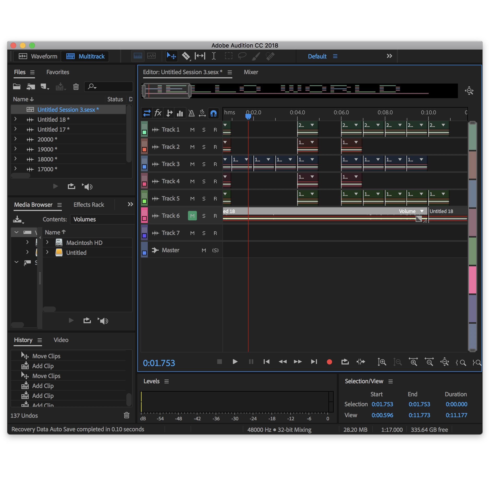
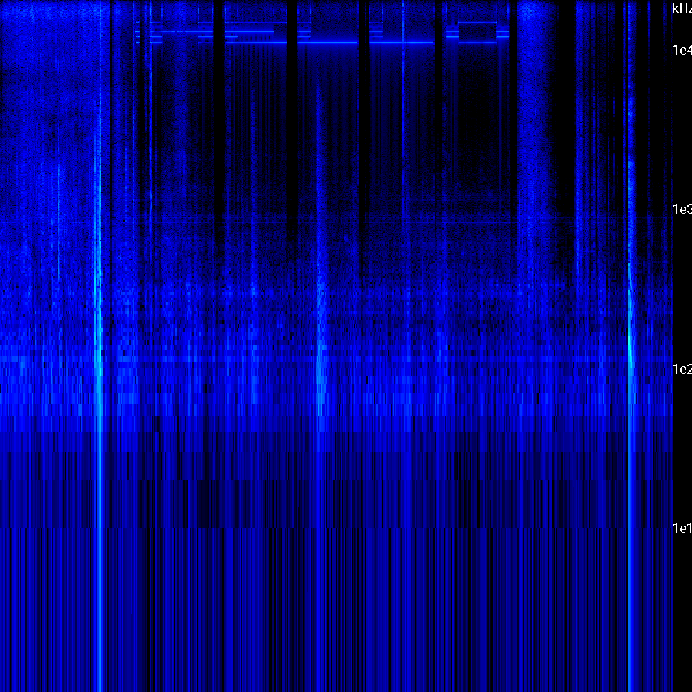
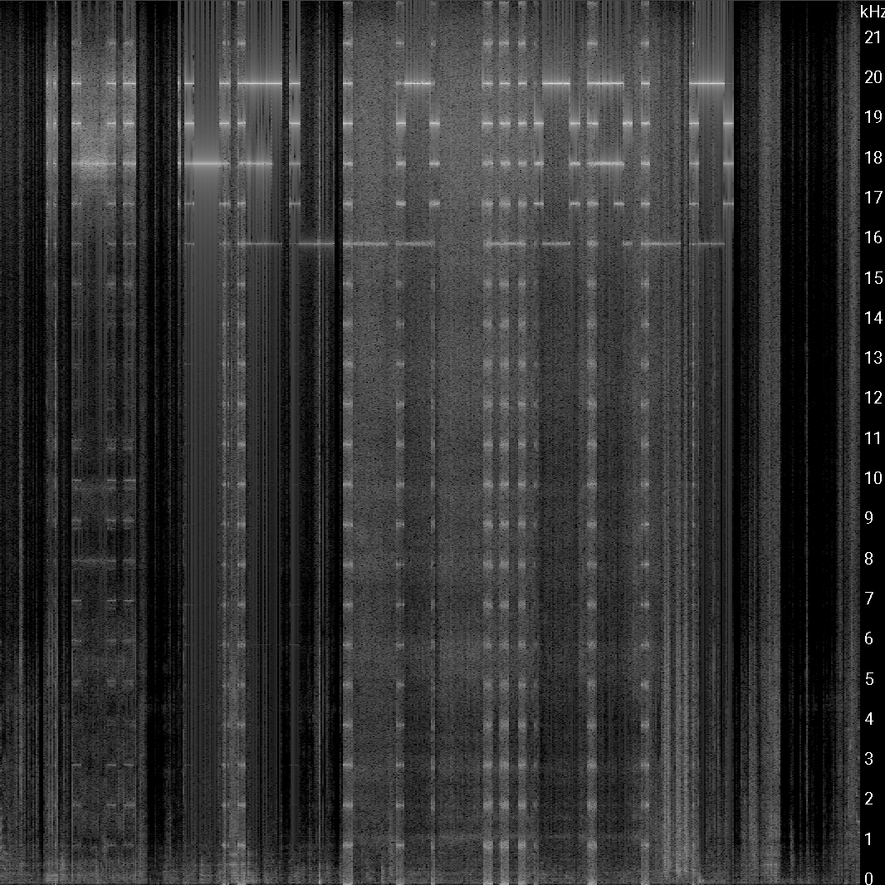
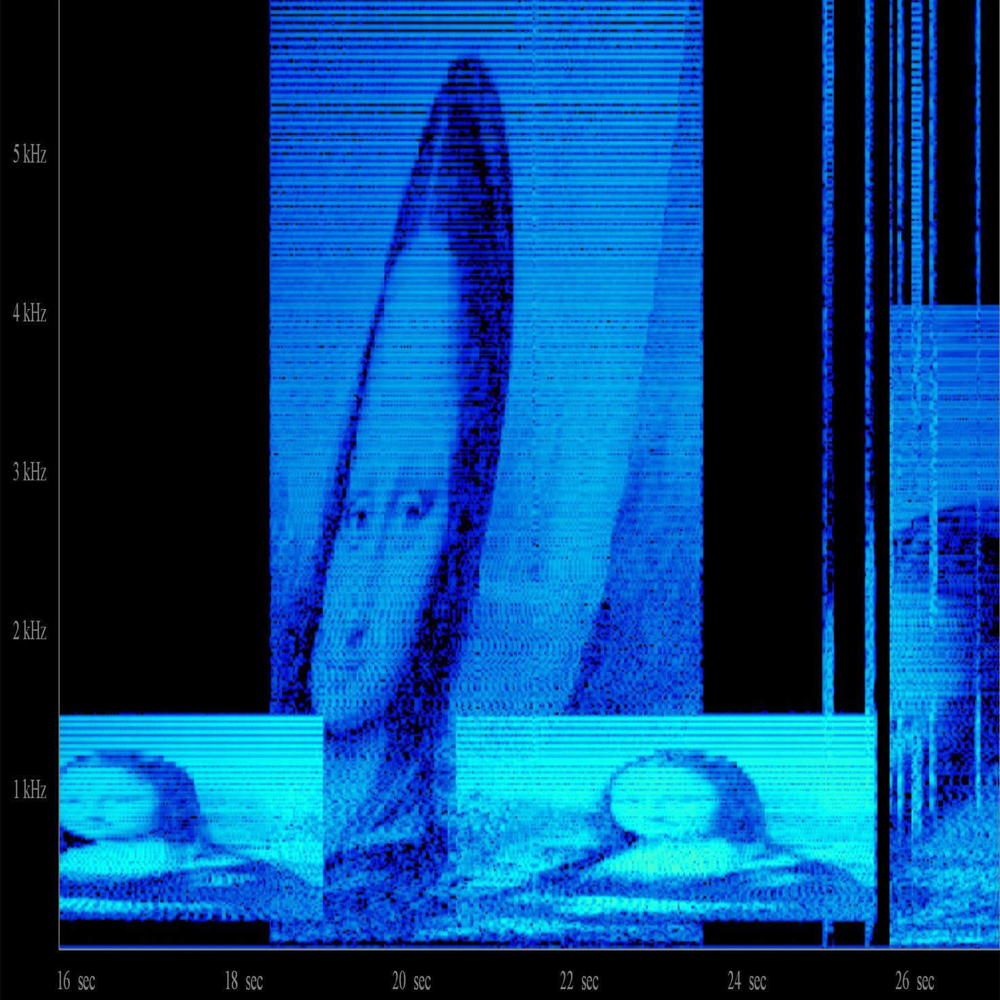
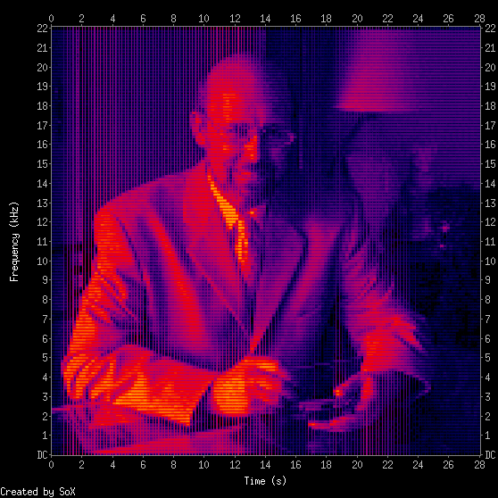

Language is something that is both comprehended in the visual and auditory forms. But what if we could communicate beyond that? Using sound in the barely audible range to communicate or even transmit images.






